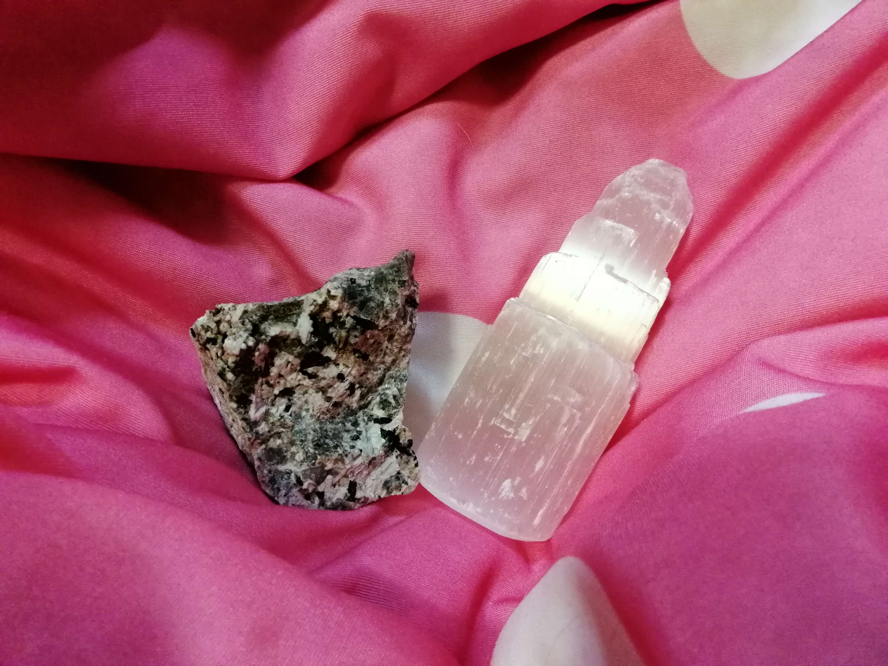
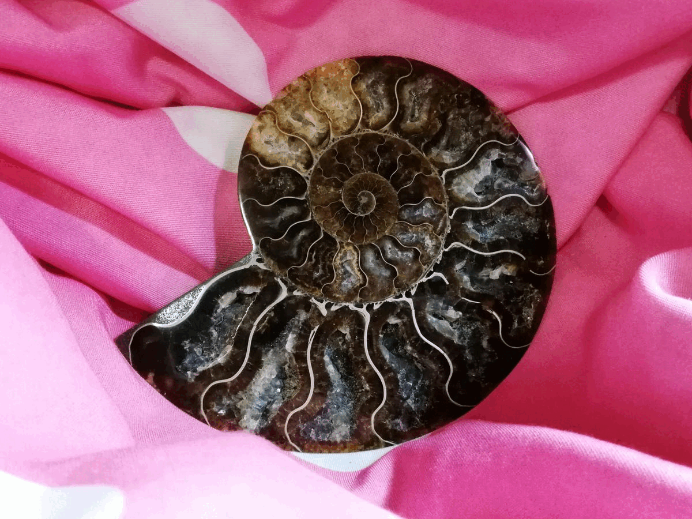

If you’re new to the world of rocks and minerals, this webpage is the perfect starting point for you.
Here, we’ll be discussing collection setups, different specimens and how to store them, what to expect, etc.
After we guide you through your first baby steps, rest assured that you will know a lot more
about rocks and minerals than you did before! Due to the nature of most collections targeting
the accumulation of mostly minerals, that will be our focus as well.
All references for this website can be found Here.
 You may be wondering what the difference between rocks and minerals are. If so, that’s a wonderful question! Minerals have a defined crystal structure and generally consist of a single type. Examples of minerals include gypsum, fluorite, and tourmaline. They have a fairly well defined chemical composition. Rocks on the other hand are an aggregate of 2 or more minerals. This leads to grainy appearances such as that of which we see in granite, sandstone, or limestone. Something else to keep in mind is that the matrix of a mineral is the rock that is under the main specimen, otherwise known as the base rock. This is where the crystals are able to start forming under ideal conditions over thousands of years.
 Fossils are made up of dead organisms that have decomposed over millions of years. Under immense pressure generally within oceans or another body of water buried in sand, the organisms rot very very slowly. The reason their shape can be preserved is because empty pores after organisms decompose are filled with minerals that harden into rock. Sometimes, small crystals can even grow in them. Because these processes occurs in sand, you’ll also find that the vast majority of fossils are of sedimentary rock or have a sedimentary matrix. On the left, we see examples of some fossils such as trilobites, ammonites, horn coral, and crinoid stems.
Perhaps this could be you in the future! Rockhounds are people who are enthusiastic about rocks and minerals. They will do anything to get ahold of their dream specimens. Similarly, they can be perpetually trapped in a never ending rabbit hole of seeking for a better rock.

If you are hesitant about beginning your journey, it’s okay! It is never too late to start collecting! Whether you simply want to pick up nice looking rocks from the beach or you want to scavenge for minerals at the thrift store, it’s all up to you! Hopefully, you will not end up going down a rabbit hole of chasing specimen after specimen like so many others. Mini disclaimer: I am not a professional. All of the advice on this webpage can be taken with a grain of halite (salt 🧂). Even then, you will hopefully have some takeaways.
Go back to top